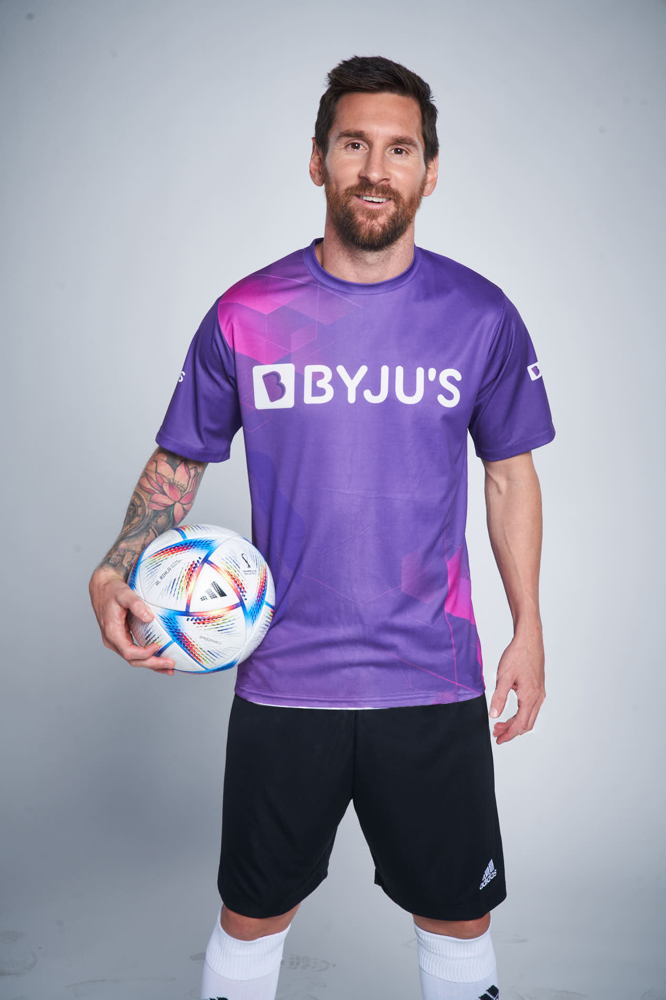
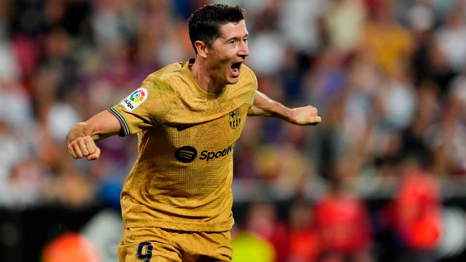

La historia del fútbol se considera a partir de 1863, año de fundación de la Asociación Inglesa
de Fútbol, aunque en sus orígenes, al igual que los demás códigos de fútbol, se remontan varios
siglos en el pasado, particularmente en las islas británicas durante la Edad Media

El Mejor jugador de toda la historia: Dios
Investigacion
14/10/22
Palmares de Futbolistas
Messi
Desde su debut con el primer equipo del FC Barcelona en un partido amistoso contra el Oporto en noviembre de 2003, Leo Messi consiguió 35 títulos: diez Ligas, cuatro Ligas de Campeones, ocho Supercopas de España y tres de Europa, siete Copas del Rey - la última en 2021 - y tres Mundiales de Clubes. Además, cabe destacar que en los Juegos Olímpicos de Pekín 2008 consiguió la medalla de oro con la selección de Argentina y que en 2021 logró ganar la Copa América con la blanquiceleste.
A título individual, Messi también ha recibido innumerables galardones, entre los que destacan sus seis Balones de Oro y sus cinco Botas de Oro. Goal:The best player in the World
Maradona
Diego Armando Maradona será recordado como uno de los futbolistas más grandes de todos los tiempos. El 'Diez' llevó a la Selección Argentina a lo más alto tras alcanzar la gloria eterna al coronarse campeón del mundo en México 1986, subcampeón en Italia 1990 y ganador del Mundial Juvenil en 1979. Además de la camiseta celeste y blanca, vistió los colores de Argentinos Juniors, Boca Juniors, Barcelona, Napoli, Sevilla y Newell’s Old Boys. A lo largo de su exitosa carrera deportiva jugó 724 partidos y marcó 358 goles. Mediotiempo:Maradona
Ronaldinho
Ronaldinho, con 34 años, sumó con Atlético Mineiro un título que le faltaba a sus vitrinas: la Recopa Sudamericana, para totalizar ahora 19 trofeos logrados con una única cuenta pendiente, el Mundial de Clubes.
GDA
Con su Galo querido, Dinho tiene desde su debut en 1998 con Gremio no paró de sumar coronas en su carrera espectacular que lo transformó no solo en ídolo de su Brasil natal sino de todo el mundo.
En el recuento de títulos, Ronaldinho ganó con la selección de Brasil (1999-2013) un Mundial (2002), una Copa Confederaciones (2005), un Mundial Sub 17 (1997) y una Copa América (1999).
En sus diversos clubes de Brasil consiguió con Gremio (1998-2000) un Campeonato Gaúcho y una Copa Sul Minas (1999), con Flamengo (2011-2012) sumó un Campeonato Carioca, una Copa Guanabara y una Copa Río (2011), y con Atlético Mineiro (2012-2014) añadió a sus vitrinas un Campeonato Mineiro, una Copa Libertadores (2013) y una Recopa Sudamericana (2014).
Por último, en Europa, con FC Barcelona (2003-2008) obtuvo dos Ligas (2004/05 y 2005/06), dos Supercopas (2005 y 2006) y una Champions League (2005/06), con París Saint Germain (2001-2003) ganó la Copa Intertoto (2001), y con AC Milan (2008-2011) sumó el Scudetto de la Serie A (2010/11). Benditofutbol:Dinho
Messi. Ronaldhino y Maradona
Top 10 equipos de futbol
15/10/22
Los equipos mas grandes del futbol
Real Madrid
Barcelona
Bayern Munich
Liverpool
Juventus
PSG
Manchester cityx
Manchester United
Atletico de Madrid
Chelsea
10 de los equipos más grandes del mundo, los mejore clubes estan en Europa
El Mejor Equipo del Mundo
Messi nació el 24 de junio de 1987 en la ciudad de Rosario, en la provincia de Santa Fe, Argentina. Es hijo de Jorge Horacio Messi, trabajador de una fábrica, y de Celia María Cuccittini, una limpiadora de medio tiempo. Su familia, de parte de su padre, posee ascendencia italiana debido a su bisabuelo Angelo Messi, que vivió en la ciudad de Ancona, y que se mudó a Argentina en 1983.
El Barcelona gana 2-0 contra el Valencia en La Liga
21/Febrero/2023
Lionel Messi marca un doblete y lidera la victoria del Barcelona
El Barcelona sumó tres puntos importantes en La Liga al ganar 2-0 contra el Valencia en un partido celebrado en el Camp Nou. El delantero argentino Lionel Messi fue la figura del encuentro al marcar los dos goles del conjunto culé. Con esta victoria, el Barcelona se mantiene en la segunda posición de la tabla y se acerca al líder, el Real Madrid.

El Barcelona celebra la victoria en el Camp Nou.
Meme del Barcelona
21/feb/2023
Meme
La rivalidad entre el Barcelona y el Real Madrid es legendaria y siempre ha sido motivo de bromas y chistes en las redes sociales. Recientemente, un meme que se ha vuelto viral en internet ha generado muchas risas entre los aficionados al fútbol.
La imagen en cuestión muestra al jugador del Barcelona, Lionel Messi, parado frente a su rival del Real Madrid, Sergio Ramos, quien yace en el suelo. El texto que acompaña la imagen dice: "Déjalo, ya está muerto".
Aunque esta broma puede parecer un poco cruel, lo cierto es que demuestra la intensidad de la rivalidad entre ambos equipos. Los aficionados al Barcelona han compartido esta imagen en las redes sociales, acompañada de comentarios ingeniosos y divertidos, mientras que los aficionados del Real Madrid han respondido con memes y comentarios igualmente ingeniosos.
En el mundo del fútbol, la rivalidad entre equipos es algo muy común y, aunque en ocasiones puede parecer exagerada, lo cierto es que forma parte de la esencia de este deporte. Y en las redes sociales, los aficionados tienen la oportunidad de expresar su pasión por su equipo y de compartir su sentido del humor con otros aficionados de todo el mundo.
Meme
Videos
15/10/22
Jugadas de: DiosEl Mejor Barca de la historiaPorque le voy al barca?
 El futbol
El futbol.jpeg)
 Top 10 equipos de futbol
Top 10 equipos de futbol.jpeg)